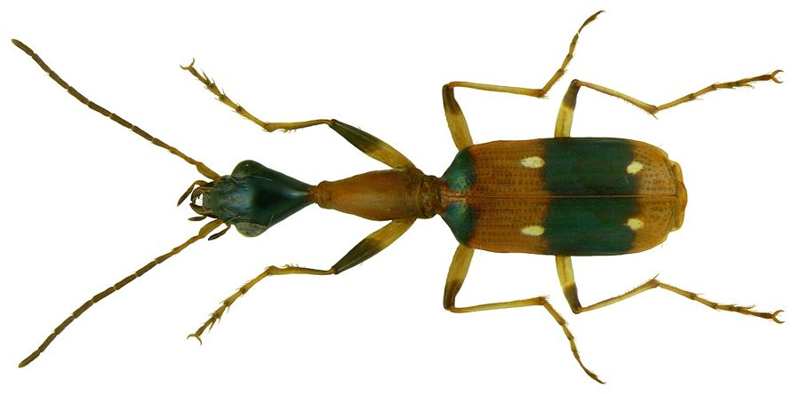

पैडी एंट बीटलPaddy Ant Beetle
Ophionea indica · Carabidae · INS-0280

- Scientific name वैज्ञानिक नाम
- Ophionea indica (Thunberg, 1784)
- Family कुल
- Carabidae
- Hindi हिंदी
- पैडी एंट बीटल
- Local names स्थानीय नाम
- paddy ant beetle
- Status here यहाँ की स्थिति
- native
- Movement आवागमन
- Resident, here all year
- Known from कहाँ दर्ज
- Others have published records from the wider Awadh–Purvanchal plain, none yet from Basti–Ayodhya अवध–पूर्वांचल से दूसरों के प्रकाशित अभिलेख, बस्ती–अयोध्या से अभी नहीं
- IUCN IUCN
- not evaluated
- Review समीक्षा
- not yet reviewed
When to look कब देखें
Expected mainly in June, July, August, September, October, November. मुख्यतः जून, जुलाई, अगस्त, सितंबर, अक्टूबर, नवंबर में अपेक्षित।
Uses and possibilities उपयोग और संभावनाएँ
Drawn from the documented uses in the profile below, where each is labelled traditional, current or a research lead. All uses →
Tell it apart from इनसे अलग पहचानें
पैडी एंट बीटल / Paddy Ant Beetle
Ophionea indica (Thunberg, 1784) — Carabidae
पैडी एंट बीटल — यह धान के जलमग्न खेतों में रहने वाला एक अत्यंत फुर्तीला शिकारी जमीनी भृंग (काराबिड बीटल) है जो बिल्कुल चींटी जैसा दिखता है। इसका सिर नीला-काला और लंबी गर्दन जैसी छाती लाल-नारंगी होती है। इसके नारंगी पंखों पर नीले-काले पट्टे होते हैं। यह धान के पौधों पर तेजी से दौड़कर माहू, फुदके और सूंडियों का शिकार करता है।
Quick Identification त्वरित पहचान
| Feature | Description |
|---|---|
| Habitus | Strikingly ant-like body form with rapid, erratic running movements |
| Head | Rounded, shiny bluish-black with large prominent compound eyes |
| Pronotum | Narrow, elongated, cylindrical, neck-like, vivid reddish-orange |
| Elytra | Bright reddish-orange with two bold bluish-black transverse fascias |
| Gait | Extremely fast cursorial runner over wet rice stems and muddy soil |
Slender ant-like ground beetle immediately distinguished by its bluish-black head, elongate orange-red neck-like pronotum, and orange elytra bearing dark bluish-black transverse bands.
Field tip: Look low in flooded paddy tillers for tiny ant-like beetles that sprint up rice stems with startling speed rather than crawling slowly.
हिंदी: चींटी जैसे दिखने वाले इस भृंग का सिर नीला-काला, लंबी गर्दन नारंगी-लाल और पंखों पर नीले-काले पट्टे होते हैं। यह धान के पौधों पर बहुत फुर्ती से दौड़ता है।
Morphology आकारिकी
| Feature | Description |
|---|---|
| Head | Rhomboidal, shiny bluish-black, narrowed behind into a distinct neck |
| Pronotum | Narrow, elongated, cylindrical, bright reddish-orange |
| Elytra | Truncate at apex, finely striate, orange with paired dark bluish-black fascias |
| Mouthparts | Sharp forward-pointing mandibles adapted for seizing fast-moving insect prey |
| Legs | Long, slender, cursorial, pale testaceous with clawed tarsi |
| Measurement | Measurement not available in consulted open sources. |
The head is shiny metallic bluish-black, constricted behind. The antennae are filiform and slender. The pronotum is elongated, neck-like, and reddish-orange. The elytra are truncate apically, leaving the abdominal apex exposed, and are marked with two broad dark bluish-black bands on an orange ground. Legs are long and cursorial.
हिंदी: इसका सिर चमकदार नीला-काला और पीछे से पतला होता है। छाती लंबी और नारंगी होती है। पंखों का पिछला सिरा थोड़ा कटा हुआ होता है जिससे पेट का सिरा दिखता है। पैर दौड़ने के लिए लंबे होते हैं।
Behaviour & Ecology व्यवहार और पारिस्थितिकी
Both adults and larvae are active diurnal pursuit predators specialized for life in wetland vegetation. The beetles run rapidly up and down rice stems and leaf blades, searching leaf folds and leaf sheaths where insect pests shelter. When alarmed, they run with erratic, ant-like speed to the reverse side of a leaf or drop into flooded water, swimming across the surface film using their long legs to climb adjacent tillers.
हिंदी: यह दिन में धान के पौधों पर शिकार खोजता है। यह तनों और मुड़े हुए पत्तों के अंदर घुसकर कीड़ों को पकड़ता है। डरने पर यह पत्ती के पीछे छिप जाता है या पानी पर तैरकर दूसरे पौधे पर चढ़ जाता है।
Life Cycle / Phenology जीवन चक्र
Breeds during the warm wet monsoon months in synchrony with the kharif paddy crop. Females lay small eggs singly in moist soil or near leaf bases. The campodeiform larva is an active, aggressive predator with sharp sickle-shaped mandibles, crawling through the lower canopy and surface mud to hunt prey. Pupation takes place in a sheltered earthen cell on field bunds. Adults emerge in several days and live for several months.
हिंदी: बरसात के दिनों में मादा मिट्टी या पत्तियों के आधार पर अंडे देती है। इसका लार्वा भी नुकीले जबड़ों वाला खूंखार शिकारी होता है जो गीली मिट्टी में शिकार करता है। मेड़ पर मिट्टी के अंदर यह प्यूपा बनता है।
Host Plants or Prey आहार
A voracious generalist predator of major rice insect pests. Adults and larvae feed upon nymphs and adults of delphacid planthoppers, cicadellid leafhoppers, and young larvae of pyraloid moths in Paddy (Oryza sativa). A single beetle consumes multiple pest insects daily.
हिंदी: यह धान के फुदकों (सफेद पीठ वाला तेला, जिगजैग लीफहॉपर) और पत्ती लपेटक कीड़े की सूंडियों को चट कर जाता है। एक बीटल रोजाना कई हानिकारक कीड़ों का शिकार करता है।
Predators / Natural Enemies शत्रु
Adult beetles are preyed upon by wetland spiders, frogs, and insectivorous farmland birds such as egrets and herons foraging in drained paddies.
हिंदी: धान के खेतों में बगुले, मेंढक और मकड़ियां इस भृंग का शिकार करते हैं।
Agricultural / Human Relevance कृषि प्रासंगिकता
An indispensable natural biological control agent in rice agroecosystems across northern India. By suppressing hopper and leaf folder populations during early and mid-crop vegetative phases, it helps prevent damaging hopper burn and secondary pest outbreaks. Agricultural extension packages emphasize avoiding early chemical insecticide applications to preserve resident Ophionea populations.
हिंदी: यह धान के किसानों का सच्चा रक्षक कीट है। यह फुदकों को खाकर फसल को सूखने (हॉपर बर्न) से बचाता है। धान के शुरुआती दिनों में कीटनाशकों का छिड़काव न करने से यह मित्र कीट जीवित रहकर फसल की रक्षा करता है।
Expected Locally स्थानीय रूप से अपेक्षित
Not a field record. Written from published accounts for eastern Uttar Pradesh. No confirmed local sighting yet — if you have seen it, that is what the atlas needs.
अभी तक स्थानीय पुष्टि नहीं। यह विवरण प्रकाशित स्रोतों से है, किसी अवलोकन से नहीं।
Widely distributed across irrigated rice paddies, nursery seedbeds, and low-lying marshlands throughout the middle Gangetic plains. Observers in eastern Uttar Pradesh should check the base of rice tillers during the tillering stage for fast-running ant-like beetles.
GBIF holds published records from the wider Awadh–Purvanchal plain, none yet from Basti–Ayodhya.
A first local record for the atlas would be a clear photograph showing diagnostic features, accompanied by date, time, and precise location coordinates sent through the project's About page.
हिंदी: बस्ती और अयोध्या के धान के खेतों में रोपाई के बाद यह फुर्तीला चींटी जैसा कीड़ा आसानी से देखा जा सकता है। धान के पौधे पर दौड़ते इस भृंग की साफ फोटो एटलस को भेजें।
Distribution वितरण
Global range: Widespread across South Asia and Southeast Asia, from India and Sri Lanka to Japan and Indonesia.
In India: Found across all major rice-growing states in lowland and irrigated tracts.
In Uttar Pradesh: Distributed throughout all paddy-growing districts during the kharif season.
In Basti district / eastern UP: Documented across rural rice acreage based on regional agricultural entomology records.
हिंदी: यह पूरे भारत, बांग्लादेश, श्रीलंका और दक्षिण-पूर्व एशिया में पाया जाता है। उत्तर प्रदेश के सभी धान उत्पादक जनपदों में खरीफ के समय यह बहुतायत में रहता है।
Research Questions शोध प्रश्न
- What is the functional predation response of Ophionea indica to varying densities of Sogatella furcifera nymphs?
- How do alternative prey species on grassy field bunds sustain beetle populations before rice transplanting? / क्या मेड़ों की घास पर मौजूद कीड़े धान लगने से पहले इस भृंग को जीवित रखते हैं?
- What is the direct toxicity of granular carbofuran or chlorpyrifos applications on field Ophionea abundance?
- A schoolchild can gently shake a rice tiller over a white tray to see if an ant-like hunter beetle falls out / क्या कोई बच्चा धान के पौधे को हिलाकर चींटी जैसे इस शिकारी भृंग को देख सकता है?
- How does flooded water depth influence the foraging efficiency of Ophionea indica in the lower crop canopy?
हिंदी: क्या धान के खेत में पानी का स्तर इस शिकारी कीड़े की फुर्ती को प्रभावित करता है? क्या बच्चे इसे सफेद थाली में गिराकर पहचान सकते हैं?
Similar Species मिलती-जुलती प्रजातियाँ
| Species | How to tell apart | हिंदी | |
|---|---|---|---|
| Ophionea nigrofasciata | Elytra marked with broader, solid continuous black fascia across the disc | इसके पंखों पर काली पट्टी ज्यादा चौड़ी और लगातार जुड़ी हुई होती है | |
| Rove Beetle \ | Paederus fuscipes | Staphylinid rove beetle with extremely short elytra exposing most of flexible abdomen | इसके पंख बहुत छोटे होते हैं और इसका पेट पीछे से खुला रहता है तथा बिच्छू की तरह ऊपर मुड़ता है |
Field rule: Ant-like orange and bluish-black ground beetle running rapidly over rice stems, with an elongated neck-like pronotum.
हिंदी: धान के पौधों पर चींटी की तरह तेजी से दौड़ने वाला नारंगी-काला शिकारी भृंग जिसकी गर्दन लंबी होती है।
Taxonomy & Classification वर्गीकरण
Original description. Thunberg (1784), Novae Insectorum Species, vol. 3, p. 68; described under the basionym Cicindela indica.
Subspecies. Monotypic species across its South Asian distribution.
Family and order placement. Belongs to the ground beetle family Carabidae (subfamily Lebiinae, tribe Odacanthini), order Coleoptera, class Insecta.
Phylogenetic notes. Tribe Odacanthini comprises specialized ant-mimicking carabids adapted for vegetation-climbing in marshy habitats.
IUCN status rationale. Not currently evaluated on the IUCN Red List of Threatened Species.
हिंदी: इसे 1784 में थुनबर्ग ने Cicindela indica नाम से वर्णित किया था। बाद में इसे काराबिडी परिवार के Ophionea जीनस में रखा गया।
Photo Gallery फोटो गैलरी
No photos yet — add field photos to media/species/paddy_ant_beetle/ and run node scripts/sync_photos.js.
Photos needed आवश्यक फोटो
- [ ] Adult beetle running on green rice leaf showing ant-like habitus (धान की पत्ती पर दौड़ता चींटी जैसा भृंग)
- [ ] Close-up of dorsal pattern showing orange neck and banded elytra (नारंगी गर्दन और पंखों के पट्टों का क्लोज-अप)
- [ ] Beetle feeding on captured planthopper nymph (फुदके का शिकार करता हुआ भृंग)
References संदर्भ
- Original description: Thunberg, C. P. (1784). Novae Insectorum Species. Dissertatio Entomologica, vol. 3. Upsaliae, pp. 53–68. (as Cicindela indica).
- Andrewes, H. E. (1930). Carabidae. Catalogue of Indian Insects, Part 18. Government of India, Central Publication Branch, Calcutta.
- Habu, A. (1967). Fauna Japonica: Carabidae, Truncatipennes Group (Insecta: Coleoptera). Biogeographical Society of Japan, Tokyo.
- Pathak, M. D. & Khan, Z. R. (1994). Insect Pests of Rice. International Rice Research Institute, Manila / Indian Council of Agricultural Research, New Delhi, 89 pp.
- GBIF Occurrence Data — Ophionea indica, India (2025).
Source file: species/fauna/insects/paddy_ant_beetle.md